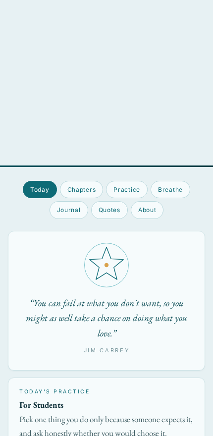
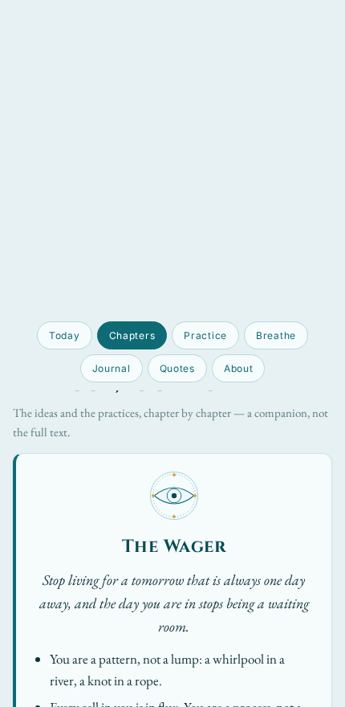
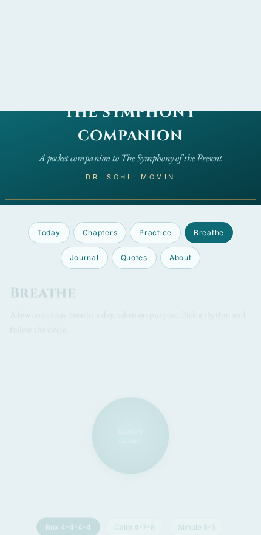
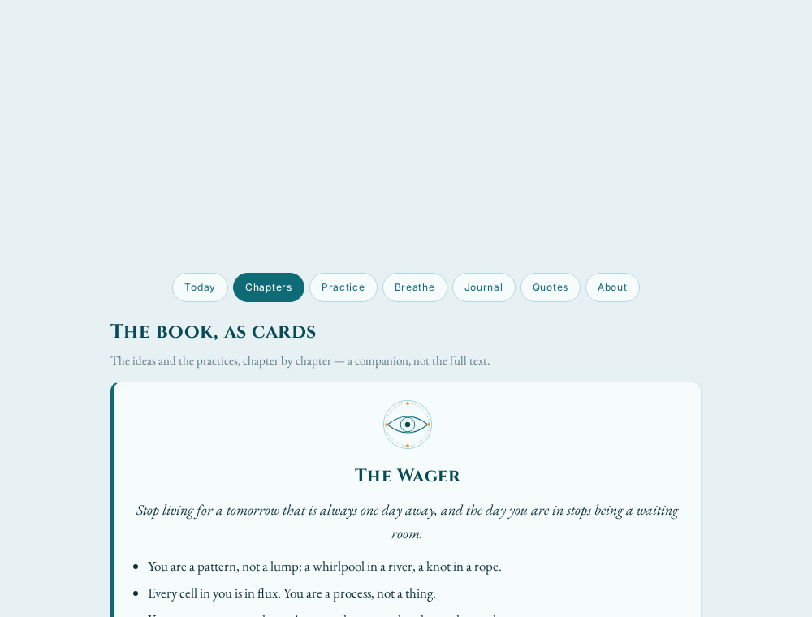

Today
A daily quote and the day's practice, chosen from the date so everyone sees the same card on the same day and it changes at midnight — with a day-streak counter for the days you mark as done.
Rotates by dateA companion, not the book
A pocket companion to The Symphony of the Present: Waking Up from the Illusion of Tomorrow by Dr. Sohil Momin — the book's ideas as cards, its practices as a checklist, a breathing timer, a gratitude journal, and its attributed quotations.
Free & fully offline — nothing to install. The Android .apk is sideload-only (allow installs from unknown sources).
What's inside
Each tab does one thing and does it slowly. No feed, no streak to gamify beyond your own — just the book's ideas and a little space to sit with them.
A daily quote and the day's practice, chosen from the date so everyone sees the same card on the same day and it changes at midnight — with a day-streak counter for the days you mark as done.
Rotates by dateThe book as eleven cards — Introduction, six chapters, the two Guides, the Conclusion and the Coda. Each carries a sigil, a one-line idea, four key points, Your one move, and an honest limit.
11 cardsEvery chapter's one move as a checklist. Tick the ones you have tried; the state is remembered quietly on your own device.
Remembered locallyAn animated breathing circle with three rhythms — Box 4-4-4-4, Calm 4-7-8 and Simple 5-5. Pick one, press start, and follow the circle as it grows and settles.
Three rhythmsA gratitude field and a free note field. Entries are saved privately on your device and can be exported as a plain-text file whenever you like.
Export as textThe book's attributed lines, each credited to whoever said it — Alan Watts, Gabor Maté, Louise Hay and others — plus a short About with the wellbeing note.
AttributedHow it works
One self-contained index.html holds the markup, the stylesheet, the script, the fonts and the inline SVG sigils. It makes no network requests, so it works from a USB stick, an email attachment or a web host identically.
Visit the live link or open the file directly. Nothing to install to run it.
Move between the seven tabs — the panels switch without any JavaScript at all.
Read a card, tick a practice, take a few conscious breaths, write a line of gratitude.
Install it to your home screen and it opens offline, with your notes staying on your device.
A look inside
The same app on a phone and on the desktop. Tap Open the companion to try it live.




Get started
Download index.html from the repo and open it in any browser. Fonts, sigils and script are inlined, so it needs no server and no network.
Questions
No — the companion stands alone. It is designed to be more useful with the book, but it works on its own.
No. There is no account, no analytics and no network call; your streak, practice ticks and journal stay in your browser's local storage, on your own device.
Yes. Open index.html directly, or install the PWA and it caches itself so it opens with no network after the first visit.
They are built from hidden radio inputs and CSS :checked selectors, so the browser switches panels by itself. JavaScript only adds the daily rotation, the streak, the breathing timer and the journal.
For personal, non-commercial use, yes. For anything commercial, please contact the author first.
Open an issue on the repository.
No. The companion offers general reflections on attention, identity and wellbeing. It is not a substitute for diagnosis or treatment by a qualified professional.